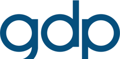
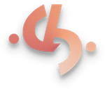
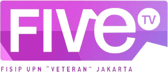
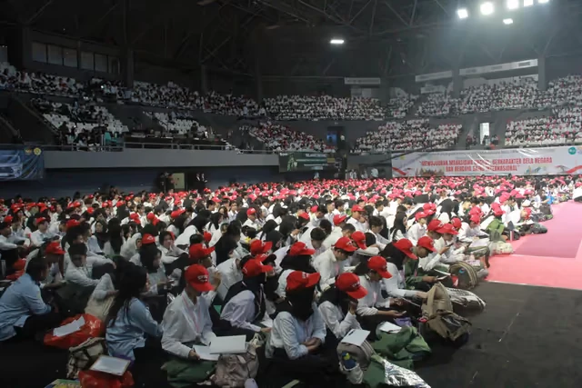
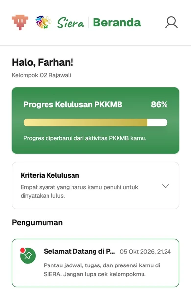
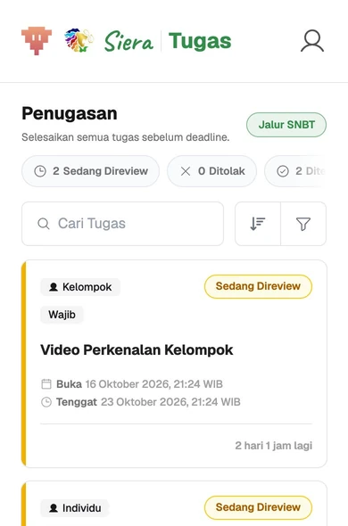
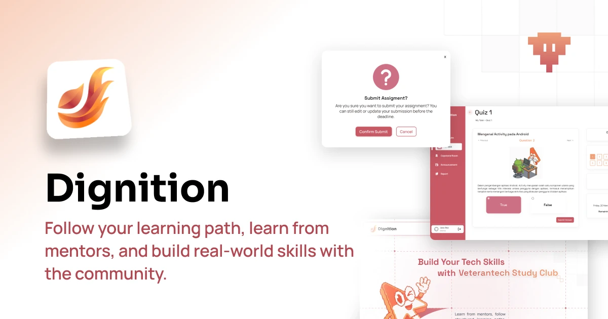
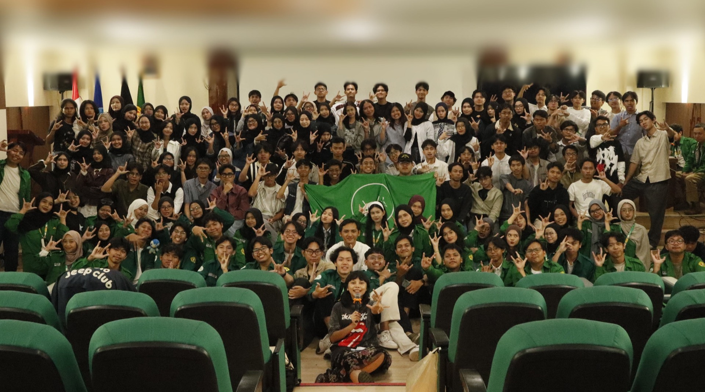

Eight weeks, eight teams, eight live AI apps on Netra
veterantech.id
ksmveterantech@gmail.com
Veterantech
@veterantechupnvj
Veterantech has shipped 15+ products from UPNVJ's computer science faculty since 2014
Veterantech is a student-led technology organization under the Faculty of Computer Science at UPN "Veteran" Jakarta. We grow members through weekly study clubs, competitions, and products built for real users and clients.
15+Products developed
Rp300M+Total project valuation
2014Operating since
10+Competition wins
Where our alumni work 30+ organizations
Five programs take members from weekly classes to client projects
Study Club
A structured weekly learning program across six tracks, each with mentors, a curriculum, and projects. An AI Engineer track would sit here.
Frontend
Backend
UI/UX
Data Science
Android Dev
Product Management
Mentors from
Universitas Indonesia
RISTEK
Telkom University
UPNVJ

GDP Labs
TikTok
ParagonCorp
Bank Indonesia
Lombakan
Competition mentoring for national and international tech and business events.

CareerHub
Industry sessions, CV and portfolio workshops, and mock interviews.
Vexpro
Built for

VIP
Internal internship across seven divisions of the organization.
SIERA ran UPNVJ's 2026 orientation for 4,900+ users



siera.veterantech.id
Built in-house by Veterantech for the university. SIERA moved the whole orientation online: automated attendance validation, task management, and real-time, centralized monitoring.
React
Vite
Hono
Redis
4,900+Total users
Rp800M+Merch sales
5Tracks
Dignition already runs our Study Club: 740+ learners on our own learning platform

dignition.veterantech.id
740+Registered learners
22Mentors from UI, Tel‑U, and industry
19Study clubs
217Learning resources
Our own LMS for mentoring, assignments, and progress. Its MCP connector already lets mentors and mentees use it from Claude, ChatGPT, and Cursor.
Our next track needs an inference partner
We have used Netra at NalarX. The pilot puts a Veterantech class on it and measures how it performs.
01What we saw using Netra at NalarX07
02The AI Engineer pilot08
03Abuse control and measurement09
04What we commit to10

Veterantech members · UPNVJ
From using Netra at NalarX: easy to build on, and throughput is what we watch
Why it fits a class
OpenAI-compatible APIExisting SDK code only changes its base URL
Keys you can controlExpiry, RPM/TPM limits, and budgets in the dashboard
Data stays in IndonesiaZero data retention by default, which suits a state university
What we watch: output speed
~400tokens/sec, typical
<200tokens/sec, frequent dips
Seen while building NalarX, not a benchmark. One gateway in front of 24–30 builders turns this into numbers Netra can act on.
An 8-week AI Engineer track: 8 teams ship live AI apps on Netra
Week
Module
Milestone
1
Setup and persona: Netra through the gateway, streaming, errors
Gateway connected
2
Cost and routing: structured JSON, semantic cache, model router
Assignment 1 (solo)
3
Tools and MCP: function calling, agent loop, local MCP server
Tools running
4
Vectors and RBAC: embeddings, vector DB, role filters
Observability and deployment: tracing, metrics, Docker, HTTPS
App live on a server
8
Demo day with Netra
8 apps presented
Sizing basis: our academic team's plan: 24–30 mentees selected from Backend and Data Science alumni, 8 teams of 3–4.
Mentees never hold a Netra key: every request passes a gateway that caps and measures it
01 · Mentee
Mentee's code
Standard OpenAI SDK, our base URL, a personal key.
02 · Veterantech
Our LLM gateway
Hard US$ budget per key
Rate limits per key
Only the models we allow
Tokens, cost, and timing per request
03 · Netra
Netra API
One real key, held by us only.
One call revokes one key; nobody else is affected.
Built and tested: budget block, key revoke, cost logs.
Netra gets product feedback from 8 live apps, plus public showcases and a path into client work
We commit to
What Netra can do with it
When
Two usage and feedback reports
Who builds, where they got stuck, structured output and tool-calling quality, and speed at peak load
Weeks 4 and 8
Mentee apps anyone can try
Each team ships a live, open-source app built on Netra and credits it, like a hackathon gallery
Week 8
A showcase that tags Netra
Final projects featured on Veterantech's LinkedIn and social channels, with Netra tagged
After demo day
Netra first for client AI work
When a Vexpro client project needs LLM inference, we propose Netra first
After the pilot
Netra sees what its own dashboards can't: who builds, where they get stuck, and speed from the user's side
What we report
Source
Adoption
Weekly active builders and tokens
Gateway logs
Apps live by demo day
Public repos
Feedback
Where new developers get stuck: docs, errors, SDK gaps
Mentor log
Speed
Time to first token and tokens/sec, p50 and p95
Gateway logs
Error rate on Netra's side
Gateway logs
Week 1Keys issued, gateway connected, kickoff
Week 4Interim report and review with Netra: adjust quotas, models, or scope
Week 8Demo day and final report
NextDecide on a second cohort or a hackathon
Three yeses today let us start the first cohort
Credits and the models the class needsA starting pool sized together after week 2, on models with tool calling and embeddings. Education credits work too.
Your name on the cohortWe run it as "Study Club AI Engineer, powered by Netra", with Netra on every graduate's certificate.
Netra on stageA guest session and a judge's seat at demo day, with the teams whose apps run on Netra.